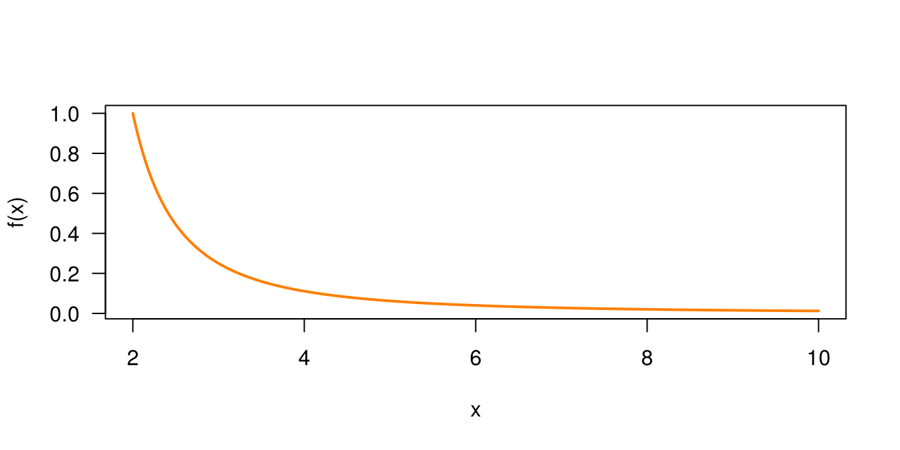
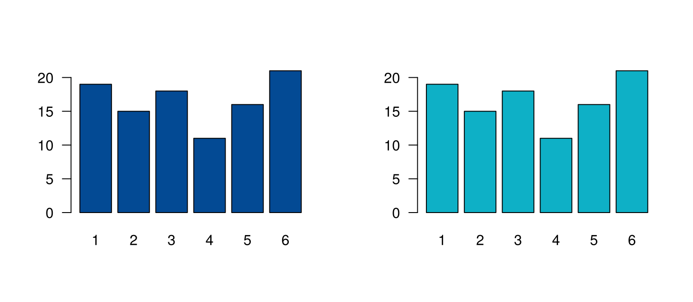

En R, una función es un conjunto de instrucciones que realiza una tarea específica. Definir funciones permite automatizar procesos y reutilizar código de manera eficiente.
La sintaxis general para crear una función es:
nombre_funcion <- function(argumento1, argumento2, ...) {
# Cuerpo de la función
# Instrucciones que se ejecutarán
return(valor_de_salida)
}Donde:
nombre_funcion: es el nombre asignado a la
función.argumento1, argumento2, ...: son los parámetros que
recibe la función.return() especifica el valor que la función
devolverá como resultado. No siempre es obligatoria, porque
R devuelve el último valor calculado, pero su uso hace
más claras las funciones.La función suma_dos_numeros recibe dos argumentos
numéricos, x y y, calcula la suma de ambos y
retorna el resultado:
# Definición de la función
suma_dos_numeros <- function(x, y) {
resultado <- x + y
return(resultado)
}
# Uso de la función
suma_dos_numeros(3, 5)
[1] 8La función suma_divide recibe un vector numérico, suma
el primer y el último elemento, y divide esa suma entre 4:
# Definición de la función
suma_divide <- function(vec) {
primer_elemento <- vec[1]
ultimo_elemento <- vec[length(vec)]
resultado <- (primer_elemento + ultimo_elemento) / 4
return(resultado)
}
# Definir un vector de prueba
mi_vector <- c(5, 8, 12, 20)
# Aplicar la función
suma_divide(mi_vector)
[1] 6.25Las funciones también son objetos. Se crean con
function: entre paréntesis van los argumentos y entre
llaves las instrucciones. Por ejemplo, para
\[f(x)=\dfrac{1}{(x-1)^{2}}\]
fx <- function(x) {
1 / (x - 1)^2
}
fx(4.5)
[1] 0.08163265
x <- seq(from = 2, to = 10, by = 0.01)
plot(x, fx(x), type = "l", col = "#FF7F00", lwd = 2, las = 1, ylab = "f(x)")
Como son objetos, se pueden pasar como argumento de otra función:
sapply(iris[, 1:4], mean)
Sepal.Length Sepal.Width Petal.Length Petal.Width
5.843333 3.057333 3.758000 1.199333
sapply(iris[, 1:4], sd)
Sepal.Length Sepal.Width Petal.Length Petal.Width
0.8280661 0.4358663 1.7652982 0.7622377 El siguiente ejemplo define una función para hacer un gráfico. Sus valores de entrada son unos datos y un color.
grafica <- function(datos, color) {
barplot(datos, col = color, las = 1)
}
set.seed(123)
y <- sample(1:6, 100, replace = TRUE) # simula 100 lanzamientos de un dado
z <- table(y)
par(mfrow = c(1, 2))
grafica(z, "#034A94")
grafica(z, "#0EB0C6")
| Problema | Causa | Solución |
|---|---|---|
could not find function |
La función no se ha ejecutado | Ejecutar primero su definición |
argument "y" is missing, with no default |
Faltó un argumento | Pasar todos los argumentos |
| La función no muestra nada | El resultado se guardó y no se devolvió | Usar return() o escribir el objeto al
final |
object 'resultado' not found |
Se usa fuera de la función un objeto interno | Guardar lo que devuelve la función |
Cree una función llamada rango_vector que reciba un
vector y devuelva la diferencia entre su máximo y su mínimo. Pruébela
con c(4, 9, 2, 7).
rango_vector <- function(x) {
resultado <- max(x) - min(x)
return(resultado)
}
rango_vector(c(4, 9, 2, 7))
[1] 7Cree una función que calcule el coeficiente de variación de un vector
en porcentaje, y aplíquela a iris$Sepal.Length.
coef_variacion <- function(x) {
return(100 * sd(x) / mean(x))
}
round(coef_variacion(iris$Sepal.Length), 1)
[1] 14.2Última revisión: 5 de noviembre de 2026.